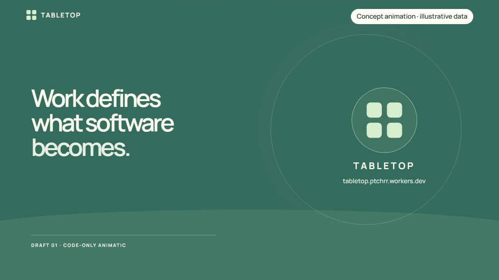

tabletop.
เริ่มจากงาน แล้วให้เครื่องมือเติบโตไปกับมัน
Tabletop คือพื้นที่ทำงานร่วมกันบน Canvas ที่ให้คุณบอกสิ่งที่อยากทำ แล้วให้ AI ช่วยร่างตาราง แบบฟอร์ม ปุ่ม กราฟ และวิธีคำนวณ คุณตรวจและเปิดใช้ แล้วทำงานต่อบนโต๊ะเดียวกันได้เมื่อโจทย์เปลี่ยน
เริ่มโต๊ะของคุณ · ลองเดโมโดยไม่ต้องล็อกอิน

วิดีโออธิบายแนวคิด 36 วินาที สร้างด้วยโค้ดและข้อมูลตัวอย่าง
เครื่องมือที่ค่อย ๆ พอดีมือ
เวลานั่งบนเก้าอี้ที่พอดี เราแทบไม่ต้องคิดถึงมัน เราคิดถึงงานตรงหน้า เรื่องที่กำลังเรียน หรือคนที่กำลังคุยด้วย
เราอยากให้ซอฟต์แวร์รู้สึกแบบนั้นด้วย
แต่บ่อยครั้ง ก่อนเริ่มงานจริง เราต้องจัดไฟล์ สร้างตาราง ต่อสูตร และย้ายคำอธิบายจากแชทมาใส่อีกที่ พอความต้องการเปลี่ยน ก็ต้องกลับมาประกอบเครื่องมือใหม่
The best tool is the one you don't have to think about.
จากคำขอหนึ่งประโยค สู่เครื่องมือที่ใช้ต่อได้
ร้านเล็กอยากสรุปยอดขายวันนี้ เริ่มจากบอกโจทย์ ให้ AI ร่างตารางและวิธีคำนวณ ตรวจแล้วเปิดใช้ ก่อนเติมข้อมูลกาแฟและเค้ก
เมื่อข้อมูลเปลี่ยน ใช้วิธีคำนวณที่เก็บไว้สร้างผลรอบใหม่ เมื่อต้องการลองส่วนลดแบบใหม่ ขอเปลี่ยนกฎนั้นบนโต๊ะเดิม
วันนี้คุณทำอะไรได้บ้าง
- เริ่มจากข้อความ โดยยังไม่ต้องมีไฟล์
- เพิ่มข้อมูลภายหลัง แล้วใช้เครื่องมือที่เตรียมไว้
- เก็บวิธีคำนวณและส่งผลให้ตัวเลข ตาราง หรือกราฟ
- ถามเกี่ยวกับกฎที่เลือก และขอปรับกฎนั้น
- กลับมาเปิดโต๊ะเดิมด้วยบัญชีเดิมเพื่อทำต่อ
Every table has a story.
Your Table. ตรวจงานและผลคำนวณ
A Table for Learning. ทดลองแรงและมวล
Our Tables. เล่นตามกติกาและลำดับตา
ก่อนเริ่มลอง
เครื่องมือทำงานภายในส่วนประกอบและระบบคำนวณที่รองรับ สิ่งที่ AI ร่างอาจต้องแก้ก่อนใช้ เดโมที่เตรียมไว้ไม่เรียก AI และใช้ข้อมูล/ผู้เล่นจำลอง
Work defines what software becomes.